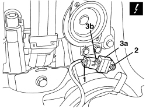
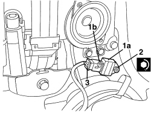
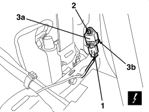
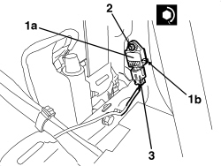

5580C40 SIDE BAG SENSOR (ONE), LH OR RH - R.R.
- Path
- Procedures > 55 ELECTRICAL EQUIPMENT > 5580 SPECIAL ACCESSORIES > 5580C AIR BAG SYSTEM > 5580C40 SIDE BAG SENSOR (ONE), LH OR RH - R.R.
- Kind
- repair procedure (removal / refitting; the operation number is the code)
- Applies to
- all engines; all production periods
- Interactive page
- https://sloeber94.github.io/elrnDB-aBrrSpdr/en/#/946002467
Applies to: all engines; all production periods
 Removing
Removing
 Refitting
RefittingOp. 7040H38 CENTRE PILLAR UPPER ELEMENT (ONE), LEFT OR RIGHT - R.R
- If working on the left side, remove the courtesy light.
Op. 7040G30 BOOT LIGHT BULB HOLDER - R.R.
Op. 7050A22 REAR SEAT CUSHION - R+R
Op. 7040H42 REAR PILLAR TRIM (ONE), LEFT OR RIGHT- R.R
Op. 7050A15 SPLIT REAR SEAT RIGHT BACKREST - R.R.
- If necessary.
Op. 7050A13 SPLIT REAR SEAT LEFT BACKREST - R.R.
Op. 7040H50 REAR PANEL (ONE), LEFT OR RIGHT - R.R
1. Disconnect the electrical connection.
Description | Component |
|---|---|
SENSOR FOR DRIVER'S SIDE BAG | |
SENSOR FOR PASSENGER SIDE BAG |
2. Undo the nut.
3. Remove the Side Bag sensor (3a), releasing the retainer (3b) from the housing in the bodyshell.

Applies to: all engines; all production periods
Refitting
Removing- Check that the Side Bag sensor is not damaged.
1. Place the sensor (1a) in position and attach the retainer (1b) in the bodyshell housing.
2. Tighten the nut.
Component | Fastening | dia | Value (daNm) | Validity |
|---|---|---|---|---|
SENSOR FOR SIDE AIR BAG | Nut | M6 | 0.65 ÷ 0.95 |
3. Connect the electrical connection.

Applies to: all engines; all production periods
Op. 7040H50 REAR PANEL (ONE), LEFT OR RIGHT - R.R
Op. 7050A13 SPLIT REAR SEAT LEFT BACKREST - R.R.
Op. 7050A15 SPLIT REAR SEAT RIGHT BACKREST - R.R.
Op. 7040H42 REAR PILLAR TRIM (ONE), LEFT OR RIGHT- R.R
Op. 7050A22 REAR SEAT CUSHION - R+R
Op. 7040G30 BOOT LIGHT BULB HOLDER - R.R.
Op. 7040H38 CENTRE PILLAR UPPER ELEMENT (ONE), LEFT OR RIGHT - R.R
- Use an Examiner to check that the system has not acquired errors during the operation.
Applies to: engines: 2.2 JTS, 3.2 JTS; all production periods; only with equipment: Spider
Removing
Refitting- Prepare the hood for the operation.
Op. 0010T79 HOOD HYDRAULIC SYSTEM - DISCHARGE AND RESTORE PRESSURE
Op. 7040H21 MOULDING ON PASSENGER COMPARTMENT REAR TRIM - R.R.
Op. 7040H22 PASSENGER COMPARTMENT REAR TRIM (SPIDER) - R.R.
Op. 7040L31 REAR ODDMENTS COMPARTMENT - R.R.
Op. 7040L51 REAR ODDMENTS COMPARTMENT SUPPORT - R.R.
Op. 7040H50 REAR PANEL (ONE), LEFT OR RIGHT - R.R
1. Detach the electrical connection.
Description | Component |
|---|---|
SENSOR FOR DRIVER'S SIDE BAG | |
SENSOR FOR PASSENGER SIDE BAG |
2. Undo the nut.
3. Remove the Side Bag sensor (3a), releasing the retainer (3b) from the housing in the bodyshell.

Applies to: engines: 2.2 JTS, 3.2 JTS; all production periods; only with equipment: Spider
Refitting
Removing- Check that the Side Bag sensor is not damaged.
1. Place the sensor (1a) in position and attach the retainer (1b) in the bodyshell housing.
2. Tighten the nut.
Component | Fastening | dia | Value (daNm) | Validity |
|---|---|---|---|---|
SENSOR FOR SIDE AIR BAG | Nut | M6 | 0.65 ÷ 0.95 |
3. Connect the electrical connection.

Applies to: engines: 2.2 JTS, 3.2 JTS; all production periods; only with equipment: Spider
Op. 7040H50 REAR PANEL (ONE), LEFT OR RIGHT - R.R
Op. 7040L51 REAR ODDMENTS COMPARTMENT SUPPORT - R.R.
Op. 7040L31 REAR ODDMENTS COMPARTMENT - R.R.
Op. 7040H22 PASSENGER COMPARTMENT REAR TRIM (SPIDER) - R.R.
Op. 7040H21 MOULDING ON PASSENGER COMPARTMENT REAR TRIM - R.R.
- If it has been discharged, restore the pressure for the hydraulic hood system.
Op. 7030H03 HOOD MANUAL OPENING FOLLOWING DEACTIVATION OF HYDRAULIC SYSTEM - CARRY OUT PROCEDURE
- Use an Examiner to check that the system has not acquired errors during the operation.
Topics linked from this page (15)
- 0010T79 HOOD HYDRAULIC SYSTEM - DISCHARGE AND RESTORE PRESSURE
- 7030H03 HOOD MANUAL OPENING FOLLOWING DEACTIVATION OF HYDRAULIC SYSTEM - CARRY OUT PROCEDURE
- 7040G30 BOOT LIGHT BULB HOLDER - R.R.
- 7040H21 MOULDING ON PASSENGER COMPARTMENT REAR TRIM - R.R.
- 7040H22 PASSENGER COMPARTMENT REAR TRIM (SPIDER) - R.R.
- 7040H38 CENTRE PILLAR UPPER ELEMENT (ONE), LEFT OR RIGHT - R.R
- 7040H42 REAR PILLAR TRIM (ONE), LEFT OR RIGHT- R.R
- 7040H50 REAR PANEL (ONE), LEFT OR RIGHT - R.R
- 7040L31 REAR ODDMENTS COMPARTMENT - R.R.
- 7040L51 REAR ODDMENTS COMPARTMENT SUPPORT - R.R.
- 7050A13 SPLIT REAR SEAT LEFT BACKREST - R.R.
- 7050A15 SPLIT REAR SEAT RIGHT BACKREST - R.R.
- 7050A22 REAR SEAT CUSHION - R+R
- K066 SENSOR FOR DRIVER'S SIDE BAG
- K067 SENSOR FOR PASSENGER SIDE BAG